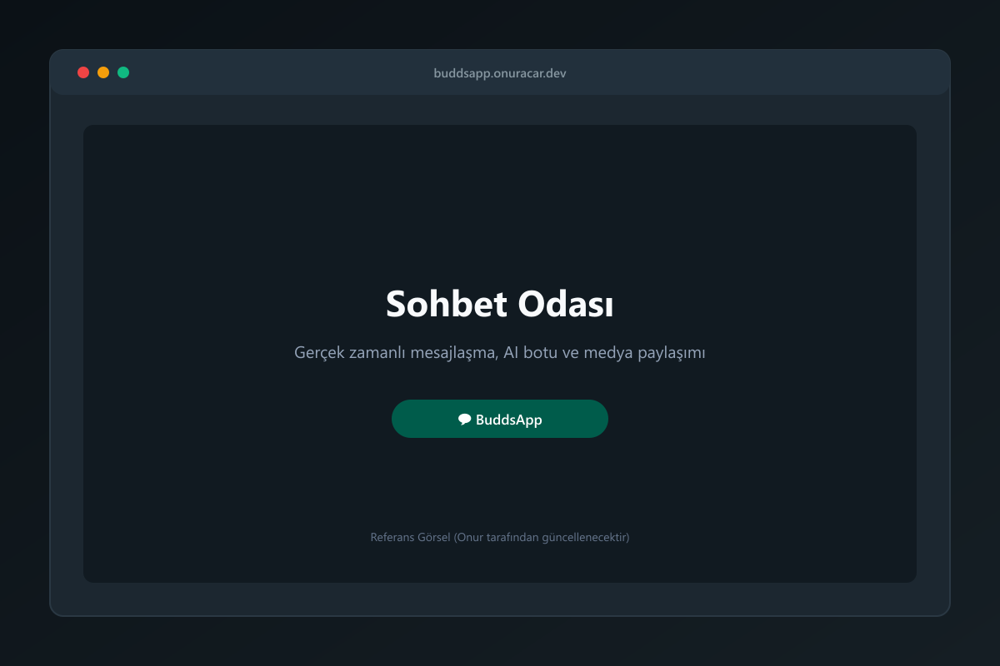

Açık Kaynak Kodlu Portföy Projesi
BuddsApp — gerçek zamanlı topluluk sohbeti
Workspaces, WebRTC sesli odaları, AI asistanı ve Supabase Realtime altyapısıyla geliştirilmiş açık kaynaklı topluluk platformu.
Bu proje şu an canlı değil. Kendi Supabase, LiveKit ve Gemini anahtarlarınla self-host edebilirsin.

Altyapı
Sistem Mimarisi
Tüm servisler doğrudan tarayıcı ile backend-as-a-service ve uç fonksiyonlar arasında ayrıştırılmıştır.
| Bileşen | Teknoloji | Sorumluluk ve Detay |
|---|---|---|
| İstemci Arayüzü | React 19 + Vite | Modern SPA mimarisi, CSS token sistemi, responsive mobil ve masaüstü arayüz. |
| Kimlik & Veri | Supabase Auth & Postgres | JWT tabanlı kullanıcı oturumu, rol denetimi ve Row Level Security (RLS) politikaları. |
| Gerçek Zamanlı İletişim | Supabase Realtime | WebSocket kanalları üzerinden anlık mesajlaşma, bildirimler ve presence takibi. |
| Sesli Görüşme | LiveKit Cloud (WebRTC) | Seçilebilir ses odaları, katılımcı denetimi ve düşük gecikmeli WebRTC SFU bağlantısı. |
| Uç Fonksiyonlar | Supabase Edge (Deno) | API anahtarlarını tarayıcıdan izole eden LiveKit token oluşturucu ve AI proxy fonksiyonu. |
| Yapay Zeka | Google Gemini API | Sunucu tarafında korunan gizli anahtarla çalışan sohbet içi yapay zeka asistanı. |
Teknik Detaylar
Mühendislik Notları
Geliştirme sürecinde çözülen kritik mimari, güvenlik ve senkronizasyon kararları.
01 / Güvenlik
LiveKit Token İmzalamayı Edge Function'a Taşımak
Problem: Ses odalarına bağlanabilmek için gereken LiveKit API secret değeri daha önce istemci ortamında veya frontend değişkenlerinde saklanıyordu; bu da anahtarın kullanıcı tarayıcısında açığa çıkmasına yol açıyordu.
Çözüm: Token üretimini bağımsız bir livekit-token Supabase Edge Function'ına taşıdık. İstemci kullanıcı JWT'sini iletir, fonksiyon oda ve yetki doğrulaması yaparak imzalı geçici token döndürür. API secret istemci koduna asla sızmaz.
02 / Güvenlik
Gemini Anahtarını Client'tan Çıkarıp Proxy Fonksiyona Almak
Problem: AI asistanı için kullanılan Google Gemini API anahtarı istemci tarafından veritabanından sorgulanıyor veya doğrudan taranabilir durumdaydı; bu durum kotanın kötüye kullanımına açıktı.
Çözüm: Tüm yapay zeka sorgularını ai-chat Edge Function'ı arkasında proxyledik. Gemini API anahtarı Supabase Edge Function secrets içinde tutulur; yalnızca doğrulanmış kullanıcıların metin talepleri işlenerek yanıt döndürülür.
03 / Yetkilendirme
E-posta Tabanlı Admin Kontrolünden Rol + RLS'e Geçiş
Problem: Yönetici hakları istemci kodundaki statik e-posta denetimiyle ve bypass anahtarlarıyla kontrol ediliyordu. İstemci kodunu manipüle eden biri veritabanı kısıtlamalarını aşabiliyordu.
Çözüm: Yetki kontrolü client'tan veritabanına taşındı: RLS policy'leri ve davet kullanımı için security definer bir RPC.
04 / Kararlılık
Realtime Mesajlaşma ve PWA Önbellek Sorunları
Problem: PWA önbellekleri ve yerel depolama tutarsızlıkları nedeniyle kullanıcılar var olmayan bir çalışma alanı ID'sinde takılı kalabiliyor, bu da Supabase Realtime kanallarının sessizce kopmasına yol açıyordu.
Çözüm: AuthContext içerisine self-healing (kendi kendini onaran) çalışma alanı kontrolü entegre ettik. Kayıtlı çalışma alanı veritabanında bulunamadığında otomatik olarak erişilebilir ilk çalışma alanına geçilir ve Realtime kanalları güvenle yeniden bağlanır.
Kurulum
Self-Host Adımları
BuddsApp'i kendi altyapınızda ayağa kaldırmak için gereken 5 temel adım.
-
1
Supabase Projesi AçınSupabase Dashboard üzerinde yeni bir proje oluşturun ve Project URL ile Anon Public Key değerlerinizi not edin.
-
2
Migration ve Seed Verisini UygulayınSupabase SQL Editörü üzerinden sırasıyla supabase/migrations/0001_rls_policies.sql ve supabase/seed.sql betiklerini çalıştırın.
-
3
Edge Function Secrets Tanımlayın ve DağıtınSupabase CLI kullanarak LIVEKIT_API_KEY, LIVEKIT_API_SECRET ve GEMINI_API_KEY değişkenlerini set edin, ardından livekit-token ve ai-chat fonksiyonlarını deploy edin.
-
4
İstemci Çevre Değişkenlerini Tanımlayın.env.example dosyasını .env olarak kopyalayın; VITE_SUPABASE_URL, VITE_SUPABASE_ANON_KEY ve VITE_LIVEKIT_URL değerlerinizi girin.
-
5
Uygulamayı ÇalıştırınTerminalde npm install ardından npm run dev komutunu çalıştırarak tarayıcınızda açın.
Arkadaş grubum için yaptığım bir hobi projesi.